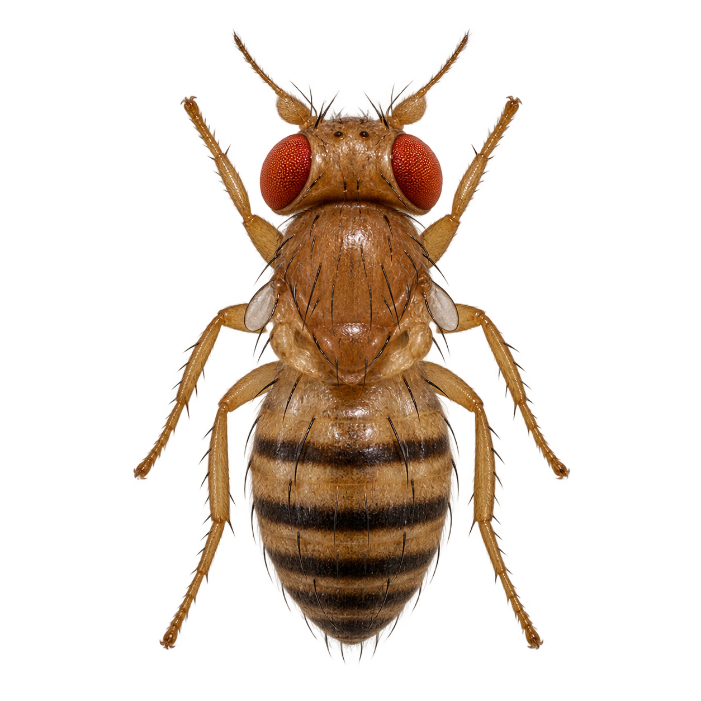

01 A trace in the activity?
The phrase lab stores six responses in external memory. Here, each decoder gets only a fresh window of neural activity after the cue has ended. The brain’s ongoing state must carry any information about the earlier symbol.
- 1. Retain stateOriginal wiring · activity continues
- 2. Reset stateClear neural state when cue ends
- 3. RewirePermute destinations · retain state

The fly illustrates the selected readout. It does not navigate or supply inputs to the model. Every delay’s prediction is kept in the log and export.
Evaluation log
TXTEach entry lists predictions at 0, 10, 25, 50, 100 and 200 ms. Cue labels are visible to you; they are not decoder features.
02 How long is the trace readable?
Readouts have not been fittedFirst, check that the symbol is decodable while the cue is still present. These diagnostic scores use a separate window and classifier.
| Delay after cue off | Retain state | Reset state | Rewired |
|---|
Training fits a separate readout for each condition and delay. Evaluation uses fresh noise and frozen weights. No external history, cue label, elapsed time, or earlier prediction enters a delayed readout.
03 Protocol & scientific limits
Task. Identify one of seven equally frequent symbols: t, o, space, b, e, r and n. Each condition uses 56 training trials followed by 56 held-out trials, eight per symbol in each phase, with shuffled order. Cue identity and neural-noise seeds are paired across conditions. Every trial starts at rest.
Timing. A 200 ms artificial sensory cue ends completely before any memory measurement. Six separate 20 ms spike-count windows begin 0, 10, 25, 50, 100 and 200 ms after cue offset. Earlier spikes are excluded from each window. Remaining voltages, synaptic currents and queued synaptic events can continue to evolve in retained-state conditions. The separate cue-visible diagnostic reads the last 20 ms before cue offset and never feeds a delayed classifier.
What learns. Each readout uses 128 fixed pools of downstream neurons and a bias, fitted by ridge regression on its own training window. All 314 annotated eye cells are excluded from the features, including the unused START partition. No symbol history or accumulated past readout is provided. Fitted weights remain locked during evaluation; the connectome itself does not learn.
Reset control. The second condition uses the original graph and identical cue inputs, then clears all neural dynamic state when the cue ends. With no background drive, a fully reset network should remain silent. Comparing it with retained state tests whether information survives in neural dynamics.
Rewired control. One fixed, seeded permutation of edge destinations preserves each neuron’s incoming and outgoing edge counts and keeps each source edge’s weight. It can create self-connections and multiple edges between the same pair. It does not preserve incoming weighted strength, spatial organization or brain regions. This is one artificial comparison network, not a statistical sample of possible wirings. Accuracy and activity are shown together because rewiring can change how well stimulation propagates.
Interpretation. Above-chance performance indicates information recoverable from these observation windows by these decoders. Early post-cue activity may be a transient response, including delayed synaptic events; it does not establish persistent biological memory. Failure concerns this model, its stimulation and its readout. It does not measure the memory capacity of real flies. Phrase recall without external history is a later test, contingent on these results.
Reproducibility. Export every trial, cue and noise seed, window timing, spike counts, features, predictions, frozen readout weights, graph hashes and rewiring details. Each new load defaults to 1× target speed. The full graph downloads about 49 MB on first use, and preparing the comparison graph takes additional memory. Actual speed depends on the device.
Background: connectome reservoir memory tests and rewired controls; the sensorimotor LIF model and its limitations. These studies motivate the experiment; they do not validate this implementation.